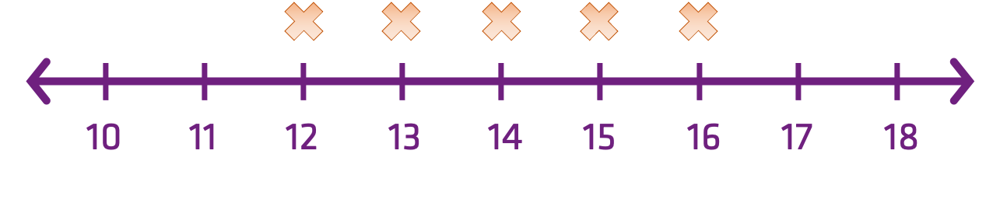

Transformation
Jon Reades - j.reades@ucl.ac.uk
1st October 2025
What is it?
Data transformation just means changing the raw data in some way to make it more tractable for analysis.
For example:
- Centering the mean on zero is an obvious example.
- But we can also do quite complicated things (with caution!) in order to get a distribution that we can work with using statistical tests that have certain expectations about the data we’re feeding them.
Transformation in 1D
\[ x-\bar{x} \]
| Input | Output |
|---|---|
| 12 | -2 |
| 13 | -1 |
| 14 | 0 |
| 15 | +1 |
| 16 | +2 |
So…
Transformations are mathematical operations applied to every observation in a data set that preserve some of the relationships between them.
For Example
If we subtract the mean from everyone’s height then we can immediately tell if someone is taller or shorter than we would expect.
If we subtract the mean from everyone’s income then we cannot immediately tell if someone is earning more or less that we would expect.
So what is a useful transformation in one context, may not be in another!
Fleshing This Out
Question: How can you tell if you did better than everyone else on the Quiz or on the Final Report?
Answer: Just subtracting the mean is not enough because the distributions are not the same. For that we also need to standardise the data in some way.
\[ z = \dfrac{x-\bar{x}}{\sigma} \]
Divide through by the distribution!
Standardisation
Z-Score Standardisation
\[ \dfrac{x-\bar{x}}{\sigma} \]
Interquartile Standardisation
\[ \dfrac{x_{i}-x_{Q2}}{x_{Q3}-x_{Q1}} \]
Interdecile Standardisation
\[ \dfrac{x_{i}-x_{50^{th}}}{x_{90^{th}}-x_{10^{th}}} \]
What is the danger of not standardising by age when looking at long-term illness?
Group Standardisation
\[ x'_{a,i} = \dfrac{x_{ai}}{\sum_{g} r_{N,g} P_{a,g}} \]
Details:
- \(x_{a,i}\) = Value of attribute i in area a.
- \(P_{a,g}\) = Population of group g in area a.
- \(r_{N,g}\) = National ratio N of group g
- \(\sum\) = Sum for all groups.
- \(x'_{a,i}\) = Standardised value of i in area a.
Normalisation
Proportional Normalisation
\[ \dfrac{x_{i}}{\sum{x}_{i=1}^{n}} \]
Range Normalisation
\[ \dfrac{x_{i}-x_{min}}{x_{max}-x_{min}} \]
Non-Linear Transformations
Log Transformation
Recall: logs are the inverse of exponentiation!
- So if \(10^{3} = 1,000\) then \(log_{10}(1,000) = 3\).
- And if \(10^{0} = 1\) then \(log_{10}(1) = 0\)
Why Log Transform?
Let’s assume that \(x = \{10, 100, 1000, 10000\}\), consider what happens if:
- The formula for the mean is \(\frac{\sum{x}}{n}\).
- The formula for variance is \(\frac{(x-\bar{x})^{2}}{n}\).
The Natural Log (\(e\)) has certain advantages over other logs and should probably be your default choice for log transformations.
Other Transforms…
- Quantile (maps the PDF of each feature to a uniform distribution)
- Square Root (often with count data)
- Arcsine/Angular (with percentages, proportions, text)
- Rank (with care on extreme distributions)
- Box-Cox and Yeo-Johnson (arbitrary power transformations)
When Transforms Don’t Help
Arbitrarily transforming data isn’t a panacea. ‘Robust’ tests can be another approach when all else fails and two common approaches are:
- Trimming: cutting off, say, the top and bottom 5% of scores would start to remove skew and offer a more useful view of the central tendency of the data.
- Bootstrapping: taking many sub-samples (usually of \(n-1\) data points or similar) we can build a picture of how certain metrics vary.
One Last Note
The term normalization is used in many contexts, with distinct, but related, meanings. Basically, normalizing means transforming so as to render normal. When data are seen as vectors, normalizing means transforming the vector so that it has unit norm. When data are though of as random variables, normalizing means transforming to normal distribution. When the data are hypothesized to be normal, normalizing means transforming to unit variance.
Source: Stack Exchange
Transforming Spatial Data
What’s Wrong with this Map?
{kind=link}
That’s Better!
{kind=link}
What’s a Projection?
{kind=link}
{kind=link}
Are spatial (a.k.a. geometrical) transformations any different from the other mathematical transformations covered in this session?
Data exists in a ‘space’ that we can transform and manipulate in various ways using functions to serve our exploratory and analytical purposes.
Additional Resources
- Normalisation vs Standardisation – Quantitative analysis
- Transforming Data with R
- Data Transformation and Normality Testing
- Introduction to Logarithms
- What is ‘e’ and where does it come from?
- Logarithms - What is
e? - sklearn API reference
- Compare effects of different scalers on data with outliers
- The things you’ll find in higher dimensions (useful brief discussion of manifolds)